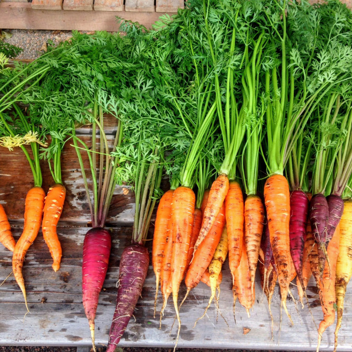

Our Mission

To ensure members of the University of Michigan community—whether on a tight budget or physically restrained from getting to a grocery store—receive equitable access to healthy, nutritious, and nourishing food and the ability to prepare it for themselves or others.
What We Provide
- Food: Produce, dairy, meat, bread, frozen and shelf-stable foods (i.e. rice, cans, tuna, etc.)
- Kitchen and Cooking: Dishes, silverware, pots & pans, Tupperware, cutting boards, knives, and other kitchenware
- Personal & Household: Trash bags, toilet paper, cleaning supplies, hygiene products, school supplies, baby items and more
- Support: Get connected to campus experts like CAPS, Dean of Students and Financial Aid, as well as SNAP (Michigan’s food program)
News
Fall 2024 Mobile Distribution for North Campus
U-M’s Maize & Blue Cupboard (MBC), the College of Engineering, Student Life, and Ann Arbor-based Food Gatherers will host North Campus mobile food distributions to make MBC resources more accessible for North Campus residents. The mobile distribution takes place in the connector hallway between the Duderstadt Media Library and Pierpont Commons.
We suggest participants bring a reusable bag or another method to carry groceries.
Federal Assistance for Food Security
If you are struggling with food insecurity, you may be eligible for assistance from SNAP. You must apply for SNAP in the state where you currently reside. You can learn about eligibility for Michigan SNAP at the Michigan Department of Health and Human Services website. You can apply for SNAP benefits at the MI Bridges website.
Many students wonder if SNAP benefits will impact their financial aid or work study programs. You’ll find answers to common questions in the Eligibility Expansion document.
If you have questions regarding your eligibility or the application process, you can reach out to the Managed Care / Student Insurance Office by emailing UHS-mancare-stuins@med.umich.edu or by calling 734-764-5182.
Hours
- Sunday: 2pm - 6pm
- Monday - Thursday: 3pm - 7pm
- Friday: 12pm - 7pm
- Saturday: closed
Location
Located in the basement of the Betsy Barbour Residence Hall, please enter via the Maynard entrance only to ensure privacy for residents. Please contact us if you need ramp or elevator access.
- Address: 420 S State St Ann Arbor, MI 48109
- Phone: 734-936-2794
Got any questions?
Press this link to submit any questions!